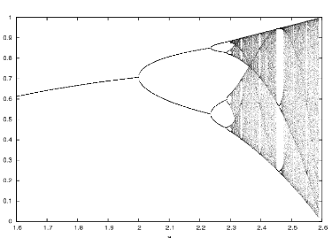

Jonathan Olson

Papers
Tricomi's Equation
The Tricomi Equation
Quadratic Formula
Quadratic Article
Overleaf
arxiv
The Tricomi Equation
\( u_{xx} + xu_{yy}=0 \) \[ \sum_{i=1}^\infty\frac{1}{n^2}=\frac{\pi^2}{6} \]